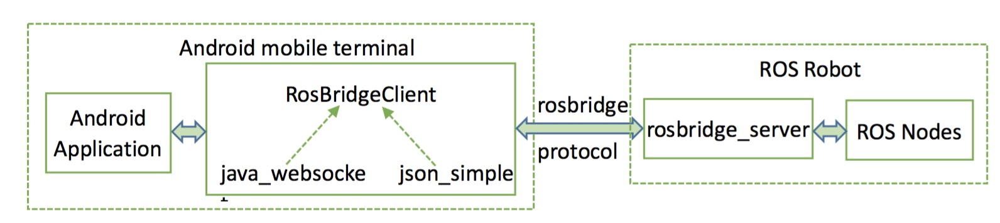

这是rbx2的一个web gui，需要在ubuntu虚拟机中启动roslaunch rbx2_gui rosbridge.launch
虚拟机IP地址为192.168.228.194，如果不是需要更改simple_gui.js中的ip地址
simple_gui.html
这个是我用来学习测试rosbridge的，包括发布订阅和设置参数等,同样需要启动ubuntu中的rosbridge server，同上
test_rosbridge.html
结构框图：android中使用rosbridge如下，web中则使用roslib.js来实现与rosbridge通信
